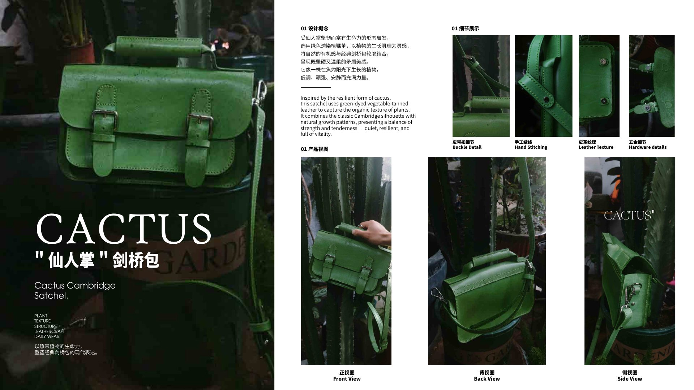
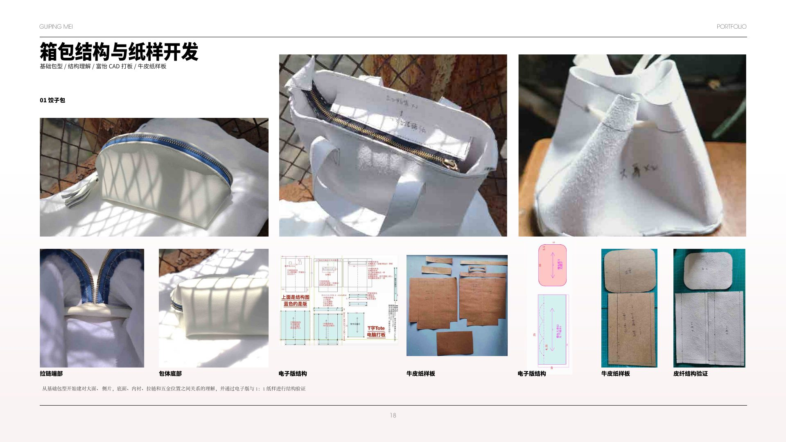
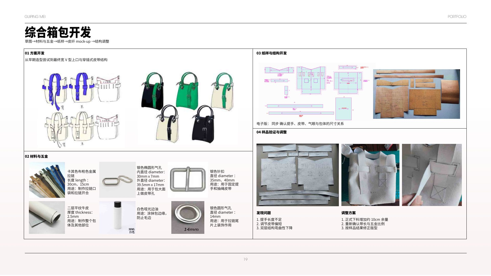
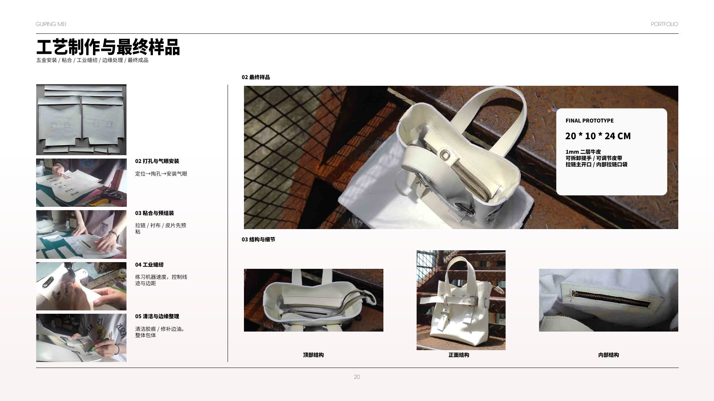
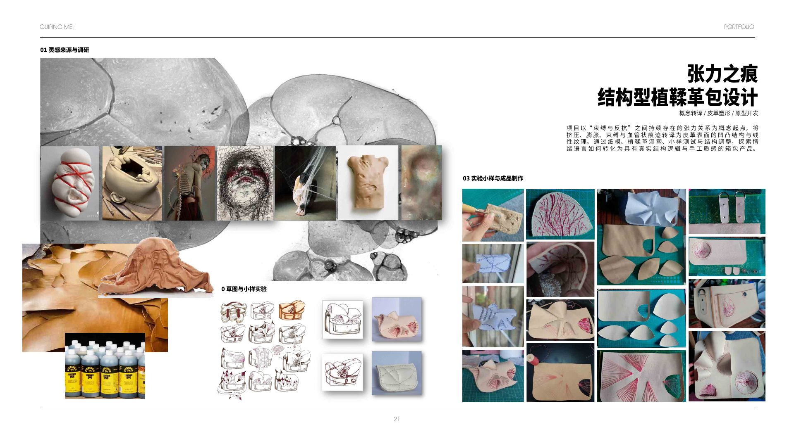
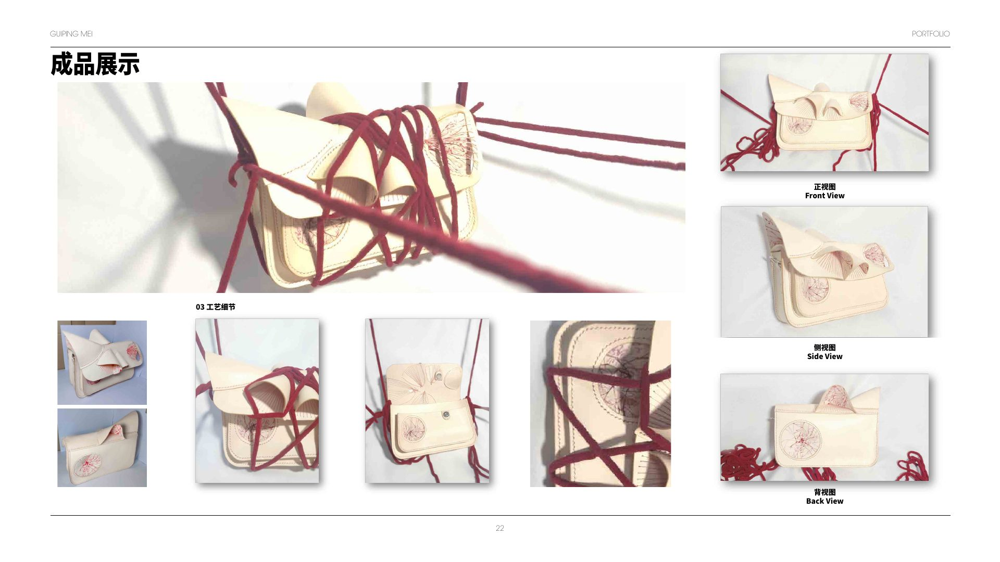
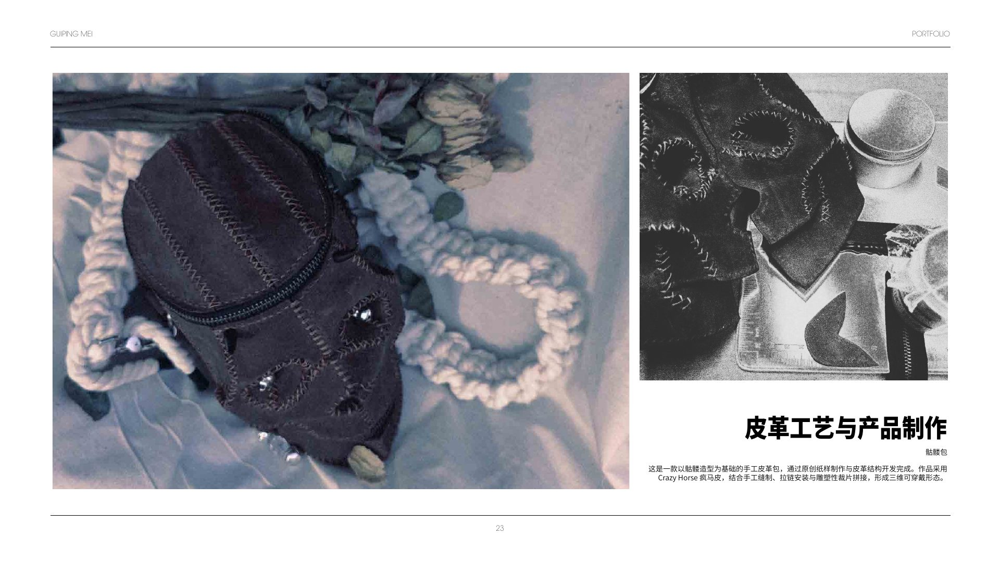
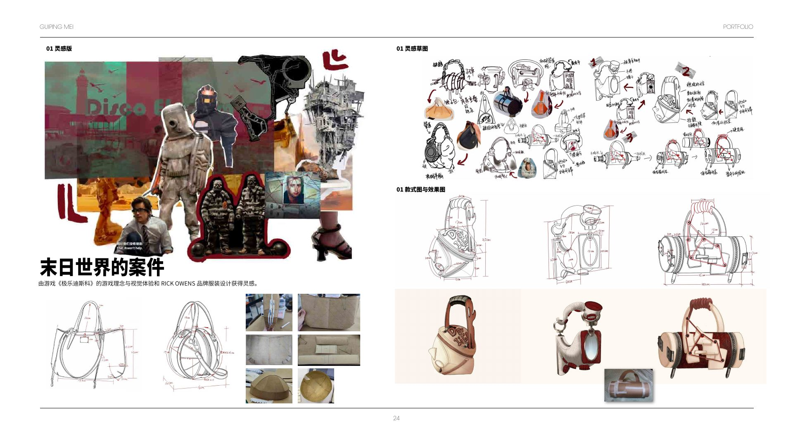

Leathercraft & Bag Engineering
Leather is treated as structure, not decoration.
这不是单一成品页，而是一间开放的皮革与箱包实验室：从自制纸样、手缝和边缘处理，到湿塑、工业缝纫与立体包体，每个项目都展示一次不同的结构判断。
Four compact case studies reveal how pattern, material thickness, hardware and hand pressure become a product language.
STUDIES4 projects
FOCUSStructure & surface
PROCESSHand + machine
01 / Cactus Cambridge Satchel
Quiet, resilient, alive.
以仙人掌在强光下仍持续生长的状态为灵感，自主绘制 Cambridge Satchel 纸样，并以绿色透染植鞣革完成手缝、边缘打磨、封边和五金安装。
Self-drafted pattern · Hand stitch · Veg-tan leather
ConstructionPattern drafting · Saddle stitch · Edge sanding & sealing · Hardware setting
02 / Bag Engineering
From flat pattern to controlled volume.
通过富怡 CAD、1:1 牛皮纸样和皮纤 mock-up，验证大面、侧片、底面、内衬、拉链与五金的尺寸关系；再根据样品问题修正提手、皮带与双层结构。
CAD · paper pattern · mock-up · final prototype


03 / Traces of Tension
Pressure leaves a surface memory.
“束缚与反抗”的关系被转译为挤压、膨胀、绳索束缚和血管状痕迹。纸模与植鞣革湿塑让情绪获得真实的凹凸结构。
Wet moulding · Relief · Cord tension

04 / Skull Bag
A graphic symbol becomes a three-dimensional bag.
骷髅造型通过原创纸样、Crazy Horse 疯马皮、手缝、拉链安装与雕塑性裁片拼接，发展为可穿戴的三维包体。
Original pattern · Crazy Horse leather · Sculptural assembly

Archive logicPattern accuracy and material behaviour remain visible in every final object.
Four objects, four material behaviours — one consistent way of thinking through making.
Next: 悦己 · Natural →